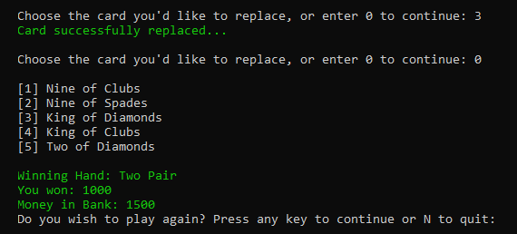
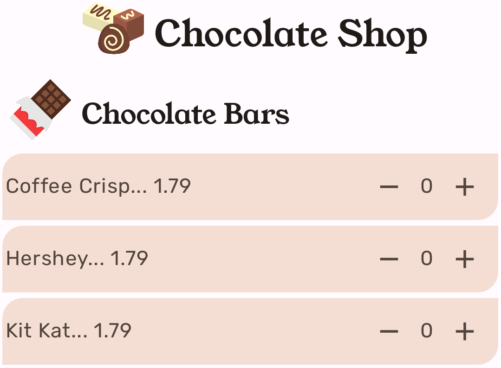
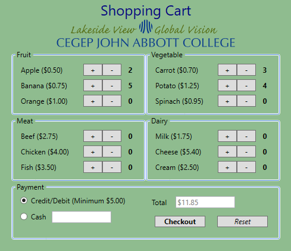
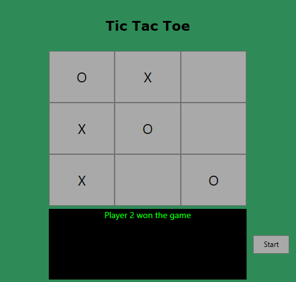

Poker (C#)

A C# console application of a poker game. This was my final project for Programming II. Users are dealt a hand of cards and can make wagers until their money runs out. The type of winning hand determines the amount of money the player gains.
Chocolate Shop (Kotlin)
Written in Kotlin, this is an Android application of a chocolate shop. It was my second assignment for Application Development II. Users are presented with different sections of chocolate which they can add to their cart. Pressing a 'Checkout' button will display a bill on the screen detailing the selections and total amount.

Shopping Cart (C#, WPF)
This is a shopping cart application, written in C#. It was an assignment for my Programming III course as an introduction to WPF. Users can add or remove grocery products to their cart. Once they've selected their preferred payment method, the user is presented with a receipt detailing their expenses.

Tic-Tac-Toe (C#, WPF)
This is a WPF game of tic-tac-toe, made at the beginning of Application Development I. We were given a dll file and asked to develop a functioning game around it. Two players mark X's and O's on a board, until someone wins, loses, or the round ends in a draw.
